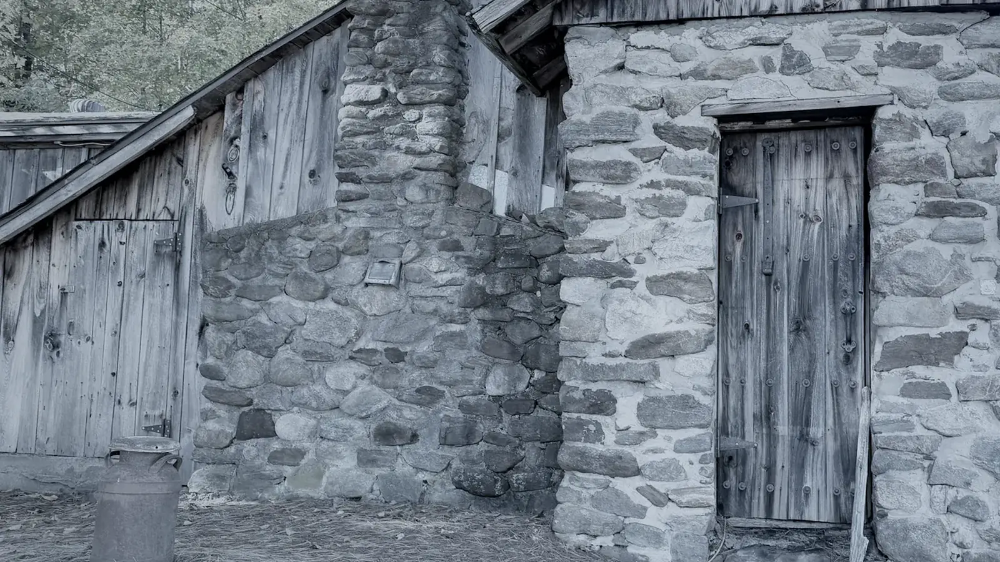
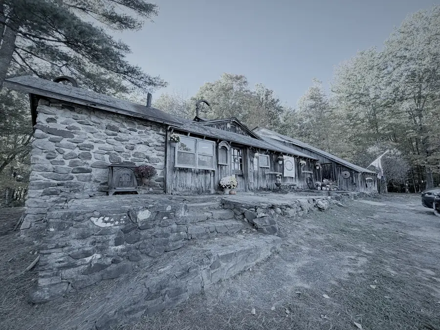
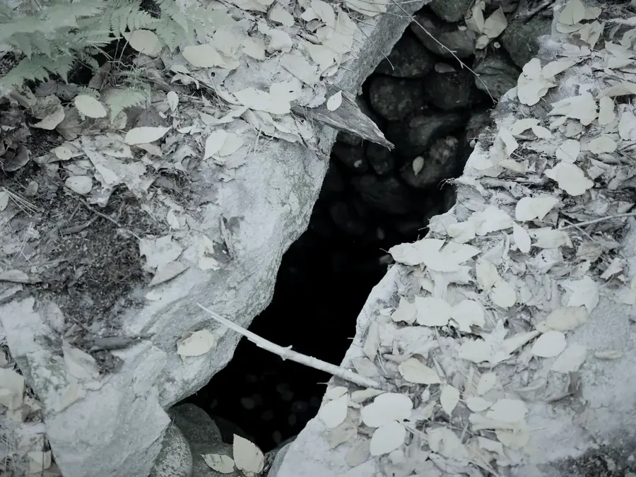
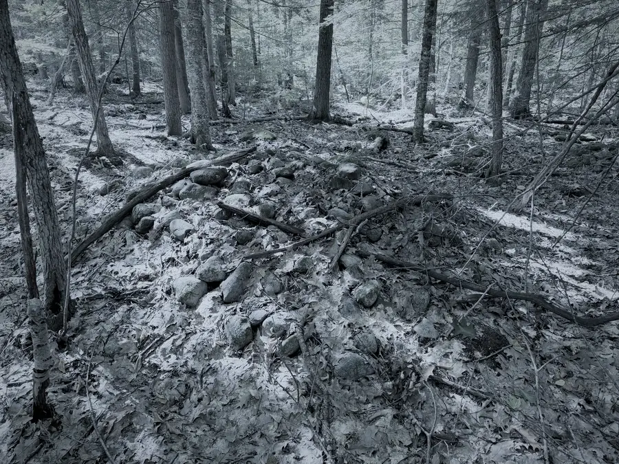
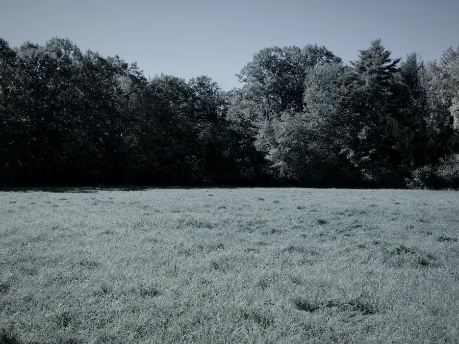
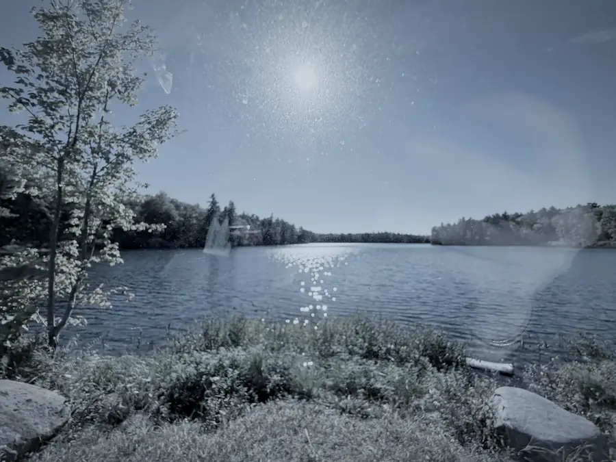

We’ve launched our GoFundMe to help cover transportation, catering, and rental fees, and to build the world of the film: period costumes, props and set design, stunt weapons, and blood and gore effects.
Thank you to everyone who has already given or shared.
Before a single sword is swung, we went looking for the world of Danse Macabre in New Hampshire: an old stone smokehouse, a hidden well, fir woods, stone walls, open fields and a lake.

The stone smokehouse

The smokehouse, from the yard

The well

A ridge in the fir woodsThe stone wall

The field

The lake
Scouting photographs by the production, graded toward the look of the film.